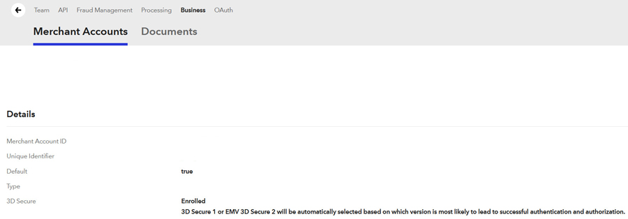

Braintree 2.1.0 - SCA Upgrade für Zen Cart 1.5.6e deutsch
Sinn und Zweck dieses Moduls
Dieses Modul aktualisiert das in der deutschen Zen Cart Version 1.5.6e vorinstallierte Braintree Kreditkartenmodul auf Version 2.1.0.
Damit wird die seit 2021 verpflichtende SCA (Strong Customer Authentication) unterstützt.
Copyright, Version, Changelog Lizenz
Copyright(c) 2021 webchills (www.webchills.at)
Version 2.1.0 - 19.02.2021
- Überarbeitung des Braintree Moduls 2.0.0 von Numinix für die deutsche Zen Cart Version 1.5.6e
- multilinguale Ausgabe der Braintree Rückmeldungen
- Integration einer Übersicht der Braintree Transaktionen in der Zen Cart Administration unter Kunden > Braintree Transaktionen
Portions Copyright (c) 2003-2021 Zen Cart
This contribution is subject to version 3.0 of the GPL license available through the world-wide-web at the following url:
http://www.zen-cart-pro.at/license/3_0.txt
Installation
Voraussetzungen
- Bitte prüfen Sie vor der Installation dieses Updates in Ihrer Braintree Administration, ob für Ihren Account 3DS bereits aktiviert (enrolled) ist
- Zahnrad > Business > Merchant Account ID Link anclicken
- Sollte dann dort so aussehen:

Sollte 3DS dort nicht enrolled sein, kontaktieren Sie erst den Braintree Support und lassen 3DS freischalten.
Dieses Modul ist nur für Zen Cart 1.5.6e deutsch geeignet und aktualisiert das vorintegrierte Braintree Kreditkartenmodul auf Version 2.1.0.Dieses Modul erfordert mindestens PHP 7.1
Empfohlene und maximal mögliche PHP Version ist PHP 7.3
Vor dem Einbau dieses Updates:
BACKUP von Shop und Datenbank machen!
Keine Haftung, Verwendung auf eigene Gefahr!
BACKUP gemacht? Ok, dann weiterlesen...
Die Installation erfolgt in folgenden Schritten. Halten Sie diesen Ablauf ein!
WICHTIG:
Bevor Sie beginnen notieren Sie sich Ihre derzeitigen Einstellungen unter Module > Zahlungsarten > Braintree
Insbesondere Merchant Key ID, Public Key, Private Key und Merchant Account ID!
Nach Aktualisierung des Moduls müssen Sie diese Einstellungen genauso wie bisher vornehmen.
1)
In die Zen Cart Administration einloggen.
Unter Module > Zahlungsarten Braintree markieren und auf "Modul deinstallieren"
2)
Im Ordner NEUE DATEIEN dieses Moduls den Ordner DEINADMIN auf den Namen ihres Adminverzeichnisses umbenennen.
Dann den Inhalt des Ordners NEUE DATEIEN in der vorgegebenen Struktur in Ihr Zen Cart Verzeichnis hochladen.
Damit werden sämtliche bestehenden Dateien des bisherigen Braintree
Moduls überschrieben.
Das ist OK, Sie müssen hier keinerlei Dateivergleiche anstellen, einfach hochladen und die bestehenden Dateien überschreiben.
3)
In der Zen Cart Administration nun wieder auf Module > Zahlungsarten, Braintree markieren und auf "Modul installieren"
4)
Einstellungen des Moduls nun wieder genauso vornehmen, wie Sie sich sie zuvor notiert hatten
5)
Prüfen Sie nun noch folgende Datei in Ihrer Zen Cart Installation:
includes/templates/DEINTEMPLATE/css/checkout_payment.css
DEINTEMPLATE steht für den Namen des im Shop aktiven Templates, z.B. responsive classic
Diese Datei enthält noch Styledefinitionen des alten Braintree Moduls, die nun nicht mehr nötig sind.
Entfernen Sie alle Definitionen, die mit #braintree_api-cc beginnen.
Eine Beispieldatei, die die einzige noch nötige Braintree Definition enthält, finden Sie im Ordner GEAENDERTE DATEIEN
6)
Machen Sie nun eine Testbestellung und wählen als Zahlungsart Kreditkarte, um sich mit dem neuen Ablauf vertraut zu machen.
Die Eingabefelder für Vorname und Nachname gibt es nun nicht mehr, lediglich Kreditkartennummer, Ablaufdatum und CVV Code.
Bevor die Daten in die checkout_confirmation Seite übernommen werden, findet die Prüfung statt. Falls die kartenausgebende Bank für diese Karte eine 3D Secure Code oder sonstige zusätzliche Authentifizierung vorschreibt, öffnet sich in einem Ajax Popup die Bestätigungsseite der jeweiligen Bank zur Eingabe des Authentifzierungscodes.
Wird das vom Kunden korrekt ausgefüllt, geht es weiter zur checkout_confirmation Seite, wo der Kunde wie bisher im alten Modul ganz normal mit "Kaufen" die Bestellung bestätigt und dadurch Zahlung und Bestellung auslöst.
Sollten Sie das ganze im Sandbox Modus verwenden, dann können Sie zum Testen diverser Szenarien spezielle Testkreditkartennummern verwenden, so wie hier beschrieben:
https://developers.braintreepayments.com/guides/3d-secure/testing-go-live/php
7)
Unter Kunden ist nun ein neuer Menüpunkt Braintree Transaktionen vorhanden, der eine Übersicht aller via Braintree erfolgten Bestellungen gibt.
Die Rückerstattung via Shopadministration ist genauso wie bisher möglich. Beachten Sie bitte, dass eine Teilrückerstattung erst dann möglich ist, wenn die Transaktion den Status settled erreicht hat. Vorher wird der Button für eine Teilrückerstattung gar nicht erst erscheinen.
Download & Support
Download des Moduls:
www.zen-cart-pro.at/forum/vbdownloads.php?categoryid=12
Supportforum zum Modul:
www.zen-cart-pro.at/forum/forums/151-Kreditkartenzahlung-mit-Braintree
Unterstützen
Sie finden dieses Modul nützlich?
Unterstützen Sie die Weiterentwicklung der deutschen Zen Cart Version.
Wir freuen uns über Spenden zur Finanzierung des Servers und der vBulletin-Lizenz:

Du bist Entwickler und willst helfen, die deutsche Zen Cart Version noch besser zu machen?
Beteilige Dich auf Github:
https://github.com/zencartpro